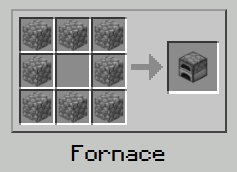
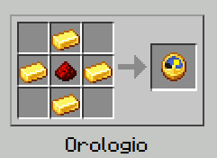
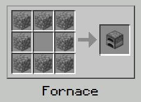
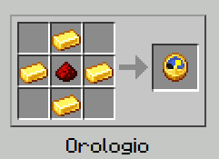

Le ricette di questa pagina utilizzano il diamante come materiale principale, ma nel gioco è possibile realizzare gli utensili anche con altri materiali, come legno, ferro, oro e netherite. Tutti questi materiali, ad eccezione della netherite, sono meno resistenti: gli strumenti ottenuti da essi sono meno efficaci e si usurano più rapidamente rispetto a quelli in diamante. Le armature, invece, possono essere costruite con pelle, ferro, oro, diamante e netherite, ma non con il legno, che non è un materiale utilizzabile per la creazione di armature.